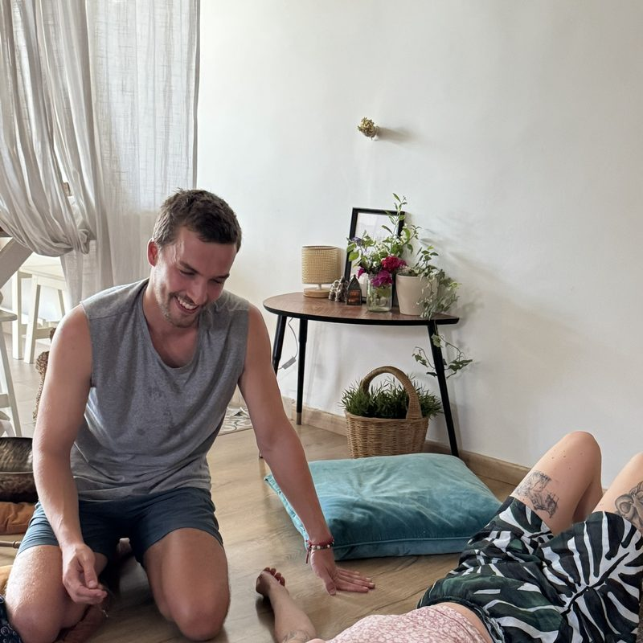

Atme. Löse dich. Komm an.
Online Atemarbeit und Yoga Sessions, Pranayama, Hatha, Yin und mehr, achtsam begleitet, keine Vorerfahrung nötig.

Willkommen
Ich bin Justus, zertifizierter Atemarbeit Practitioner und 500 Stunden Yogalehrer. Ich halte die meisten Sessions online ab, damit sie für alle offen sind, egal wo du bist (meine Rebirthing Transformationsreihe findet als einzige Ausnahme vor Ort statt). Über die Jahre ist daraus ein ziemlich breites Repertoire geworden: Verbindungsatmung, Rebirthing Atemarbeit, Pranayama, Yoga, Meditation, und dazu noch etwas Körperarbeit und Klangheilung. Ich bringe davon ein, was gerade wirklich zu dir passt.
Mehr über meinen Werdegang und meine Ausbildung



Wie sich eine Session anfühlt
Die Sessions finden online statt, einzeln oder in kleinen Gruppen. Wir kommen zunächst gemeinsam an, arbeiten dann mit Atem und Körper und schließen mit Raum zum Ausruhen und Nachspüren ab. Nichts wird erzwungen, du wirst in deinem eigenen Tempo begleitet.